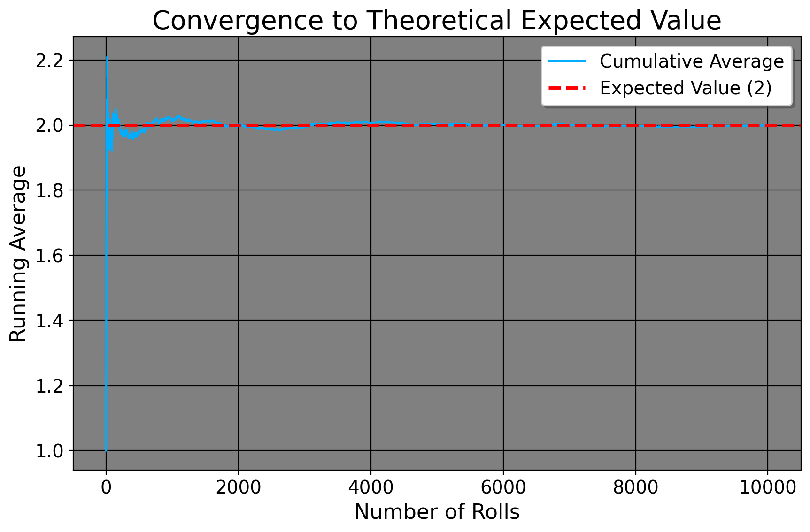
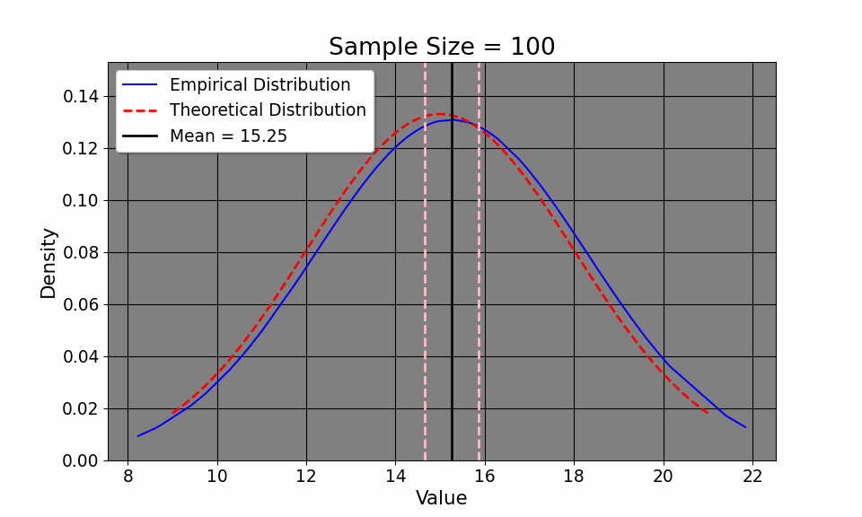
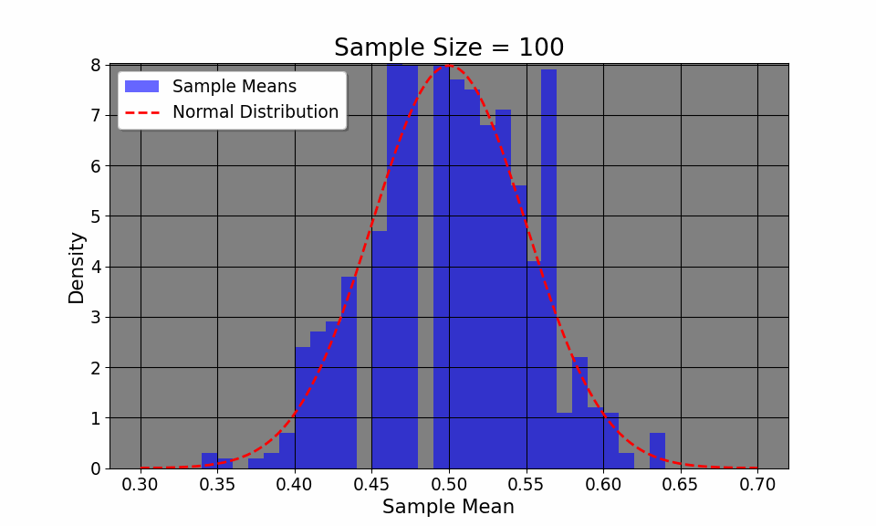

5 Asymptotic Theory
Across the earth, there are around 7.5 sextillion sand grains across all beaches and deserts. However, mathematics isn’t bound by Earthly constraints. As I mentioned in the previous chapter, probability and statistics is about quantifying uncertainty in order to draw conclusions. However, it is now time to understand the very basics under which we can draw conclusions to start with. To do this, we investigate basic asymptotic theory. It is the very underpinning of statistics, in particular explaining the circumstances under which we can be confident about our estimates. We defined confidence intervals rather quickly in the previous lecture. Here, we will add to your toolkit with which to understand when they are valid.
5.1 Law of Iterated Expectations
Suppose we wish to commute to and from Georgia State University from Marietta, Georgia. As we’ve discussed in the previous chapter, we can think of some variable \(c\) (commute time) as a random variable, as its value is not guaranteed until we actually leave home and arrive. Suppose we are now interested in the average time it takes us to arrive using I-75 South, conditional on us taking the South or North depending on our starting point. We think I-75 South will take 15 minutes, compared to I-75 North which we think will take 20. We can formalize this also as \(x =\{1,0\}\), where we take North being coded as 1, else as 0 if we take North. So, we leave home (or school) using either highway, and record how long it took to get to the destination. Say, we record the value of 30 minutes in the morning and 40 in the afternoon. Do we conclude that this is how long it takes to get to school on averge, and that we should use some other interstate? No. Why not? This is only one estimate from one day. There are all kinds of things that could have been going on in the morning or afternoon that might influence your travel time, most notably traffic, construction, or other random events for any given path we choose. So, what are we left to do? The only thing we can do, is collect more data.
So suppose we take this same highway for one month, using only 75 South and North (unlike say I-285). We record the amount of time it took us to get to school and home that day using either way (that is, we record our commute time to and from school each day for both ways, taking the average separately for each week). Mathematically, we express this as the expected commute time conditional on the chosen route \(x\): \(\mathbb{E}[c|x=1]\) (expected commute time given we take North) and \(\mathbb{E}[c|x=0]\) (expected commute time given we take South). The Law of Iterated Expectations (LIE) states that the overall expected commute time for I-75 (to Marietta, anyways) is the average of these conditional expectations, weighted by how often each route was taken. Formally: \(\mathbb{E}[c] = \mathbb{E}[\mathbb{E}[c|x]]\). This means that the overall average commute time \(\mathbb{E}[c]\) is the expected value of the conditional expectations \(\mathbb{E}[c|x]\)
So, if after a month of data collection, we find that the average commute time is 17 minutes, this is the unconditional expectation \(\mathbb{E}[c]\), calculated by taking the average of the commute times across both routes across all days. This approach, where we repeatedly take the average of an outcome/variable given some condition (here, the route we take), reflects the Law of Iterated Expectations.
5.2 Law of Large Numbers
Why might this be true, though? Why, after taking all of the averages across a whole month do we arrive at 17, which is a lot closer to 15 than we first thought? Surely, this number is much quicker than the 30 minutes we took the first day? The reason for us getting this value is because of what we call the Law of Large Numbers, or \[ \lim_{N \to \infty} P\left(\left|\frac{1}{N} \sum_{i=1}^{N} x_i - \mu\right| < \epsilon\right) = 1. \] Here is what the math says: as our sample size \(N\) increases without bound (that is, as we take the highway more and more and more and more and more… to an infinite amount of times), the probability that the average of our individual empirical daily commute times \(x_i\) approaches the true population value is 1. In other words, the more estimates we take, the closer, in probability, we come to our population estimate. You see, the first day of 30 minutes was simply a sample of 1. We had nothing else to base our ideas off of aside from whatever GPS tells us. Maybe there was traffic or some other unforeseen thing. However, as we take the highway more times, we tend to get a better sense of how long it’ll take to get places, what lanes to use, and so on and so forth. To further prove this, the expected value of a three sided die numbered 1 to 3 is 2. If we cast the die three times and then take the average of what we get, we should see the cumulative empirical average converge to the theoretical average.
As it turns out, that’s exactly what we do see. As researchers, what this means is that drawing from a large sample tends to be better than a small one for empirical. For example, if someone has a sample size of 20, we likely would not be okay with generalizing one particular aspect of this sample (say, weight or political affiliation) to everyone in the same city, as we’d need more data points to average over. Ideally, if we’re trying to sample American public opinion, we don’t want to use only 2 American states, ideally we’d have all the state data available to use.
5.3 Central Limit Theorem
By understanding the Law of Iterated Expectations (LIE) and the Law of Large Numbers (LLN), we can now delve into the Central Limit Theorem (CLT), which helps us characterize the overall distribution of commute times. That way, we can do things like calculate the confidence interval of our commute times, hoping it will approximate the true one. The CLT says: \[ \frac{\bar{x_i} - \mu}{\sigma / \sqrt{N}} \xrightarrow{d} N(0, 1) \] or that as the sample size increases, the probability of our empirical distribution approaches[a normal distribution. Aside from the distribution of our measurements, our sample mean, by LLN, approaches the population mean. If this seems at all abstract to you, we may simulate this. Here, I define the average commute time to be 15 with a standard deviation of about 3 minutes (between 12 and 18 minutes). I then simulate the commute time across 20000 commutes (since I didn’t wish to drive down Interstate 75 20,000 times!). We can clearly see from the GIF that the empirical distribution (that is, the commute times we experience) quickly approaches the true population average time as we commute more and more.
This convergence supports the LLN, which tells us that our sample mean will approach the true mean \(\mu=15\) as we collect more data. Additionally, notice how our confidence intervals get tighter and tighter given an increase in sample size. Note that this result is intuitive: as we collect more data, it would make sense that we have a better picture about the underlying data (such as, the sample mean and variance). So, with this in mind, it makes sense that we have a better sense of our uncertainty of our estimates, as the confidence interval shows. So, with the commuting example, the first day took us a half hour. We suspected that the commute would be 15 and 20 minutes respectively (the expected value of which is 17.5 minutes). So, in terms of minutes, we could hypothesize that the true travel time takes between 15 minutes or 45 minutes. In other words, we’re quite uncertain. But, as we collect more data, the uncertainty decreases, tightening to be around the true value.
Additionally, the CLT allows us to visualize how even if the original distribution of the variable is not normal (say, a coin toss where we only have two outcomes, heads or tails), the distribution, given enough samples, converges to a normal distribution.The plot above flips a coin 1000 times, plotting the empirircal distribution after every 100 flips. We can see that the distribution, despite having only two outcomes, converges to a normal one. Thus, CLT allows us to construct confidence intervals and make inferences about a population, given a large enough sample.
5.4 Sampling
Before we continue however, we need to say a few words about sampling, and the idea of collecting a random, probibalistic sample versus a non-random sample. The reason this matters is because no matter how we calculate our statistics, we need to be sure that our statistics can actually map on to the actual constructs we want them to. A random sample, in principle, is the idea that everyone from a given population has the same chance to be included in the sample for some study. For example, if we wanted to survey the public opinion of Georgia State students, one potential way of doing this would be to get every single active GSU email from the University and put it into a spreadsheet. We then could generate a variable in the spreadsheet called a “Bernoulli” variable, or a variable that takes on the values 0 or 1. We can then, after setting the number of observations (defined as the number of emails we have), define the probability with which a given variable takes on 0 or 1 to be 0.5. In other words, everyone has an equal chance of being included in the survey, 1 means youre included, else 0. Note, there are other, much more sophisticated ways to do this, but this is one way of taking a random sample.
What would a non-random sample look like, then? Well, in principle it’s where everyone in the population does not have an equal chance of being included in the sample. But, this is a simple definition. It does not explain why it’s bad or why it’s harmful to researchers. So, let’s consider a few kinds of non-random sampling. The most obvious one is something called convenience sampling. As the name suggests, we take a sample based on whoever is around us. This can be in our class, on the street, or in our friend group. For example, I have two coworkers, one goes to MIT and the other went to Columbia, both for econ degrees. If I wanted to know how good the average person in the United States is at calculus or math, then I cannot simply assess their skillset and reach a conclusion. Why not? Well, MIT and Columbia are incredibly selective schools that select for math skills. Furthermore, the fact that I know them or work with them is likely correlated to my research interests which demand a good background in statistics/applied mathematics. Similarly, even if we personally randomly asked people on the street, this is still not a random sample. Why? Well, there are likely underlying reasons to people being in certain locations. If you’re in the biology department, it’s likely that most people you meet will have an uncanny knowledge about germ theory or anatomy. And we’d expect this, we’d say something’s wrong if these were not true.
At this point, you’re likely asking what any of this has to do with the previous discussion of asymptotic theory or policy analysis for that matter. Well, the sample we collect is directly related to the results that we obtain. If our goal is to approximate math knowledge in America, it’s inapprorpiate to only sample students from the engineering department at Georgia Tech or the economics students at Chicago. To say it differently: even if we did collect data from every single student at every single engineering department in the United States, this would map on to the population of engineering students, at best, not the United States as a whole. In statistics language, our estimate of the “true” mean would be biased, in this case significantly upwards. Even though our confidence intervals would be more precise as our sample size increases (that is, the more engineering students we ask), we would still never converge to the true parameter because our sample is so dissimilar to the population of people we care about, effectively giving us the right answer to the wrong question. When we discuss regression, the importance of sampling will become even more apparent, but for now suffice to say that it’s important that the sample be as representative of the underlying population as possible.
6 Summary
Asymptotic theory simplifies statistical analysis by encouraging us to think about the “true” population of interest. It provides us with tools to derive more accurate and precise estimates from. But, as a more general rule for policy analysis (and life), it demands us to think with an infinte mind instead of a limited one. In other words, we should always ask ourselves as researchers “if we could sample everyone, would this statistic I just calculated be close to reliable?” One practical implication of this is having a sufficiently large sample size in order to increase the probability of being closer to the true mean. However, as the previous section discusses, these asymptotics are only as justified as the quality of the sample. We need, in other words, our sample to be as representative as possible of the broader population of interest. In the next lecture on correlation, aside from sampling, we will discuss the basics of statistical design in order to have valid results from statistical analysis.